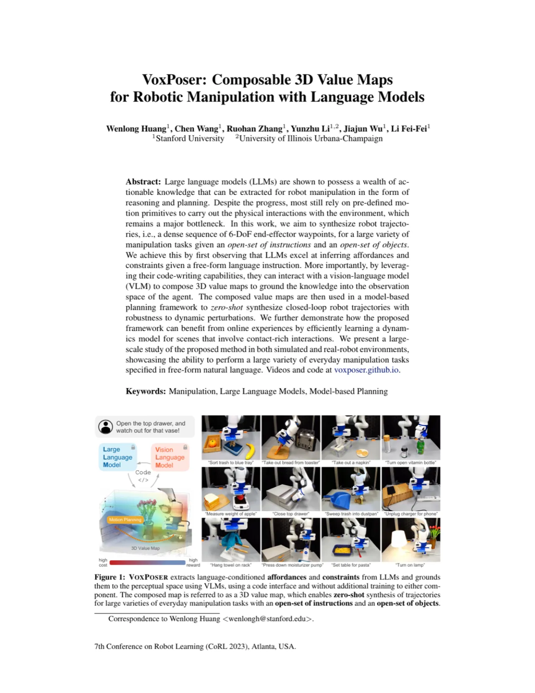
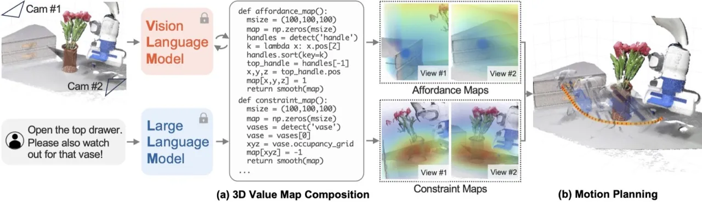
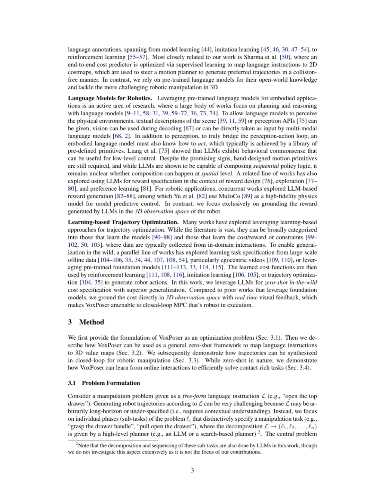
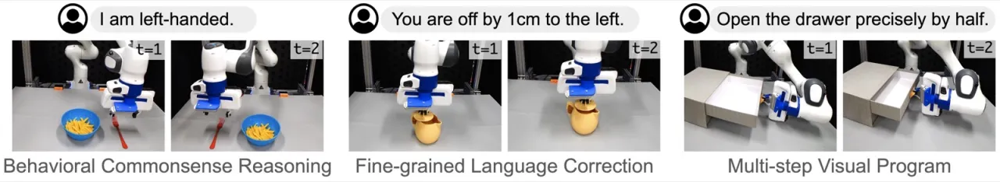
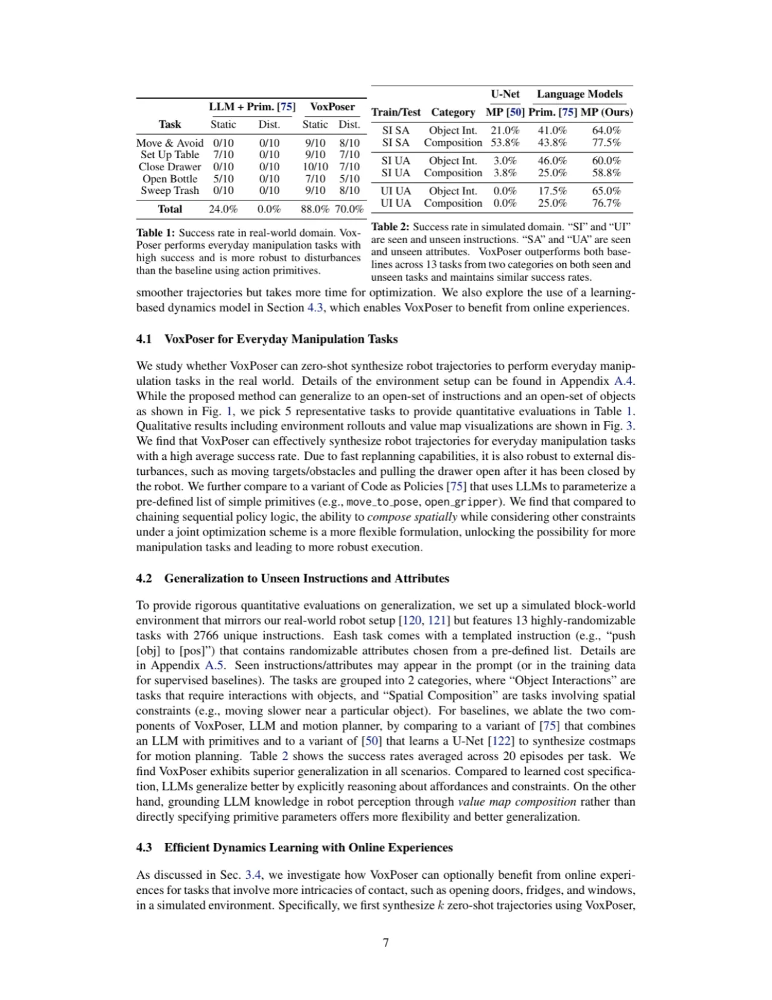

VoxPoser 利用大语言模型（LLM）的代码生成能力，通过调用视觉语言模型（VLM）在三维观测空间中组合语言条件的 affordance/avoidance value maps，再由运动规划器将 value map 作为目标函数，零样本合成六自由度闭环机器人轨迹。系统无需额外训练，可泛化至开集语言指令与开集物体。
当前基于 LLM 的机器人系统绝大多数依赖预定义的 motion primitives（如 move_to_pose、close_gripper），这构成了系统泛化能力的根本瓶颈——每新增一个技能都需要人工设计与大量数据收集。
"Despite the progress, most still rely on pre-defined motion primitives to carry out the physical interactions with the environment, which remains a major bottleneck."
VoxPoser 提出的核心洞察是：LLM 擅长推理 affordances（目标区域）与 constraints（避障约束），且它的代码生成能力可以直接调用感知 API，在三维体素空间中构建稠密的 value map，将抽象的语言知识锚定在机器人可感知的观测空间中，从而完全绕过手工设计的 primitives。

VoxPoser 将语言指令映射为 3D value map，再由运动规划器合成轨迹。整个流程由 LLM 生成 Python 代码驱动，无需任何额外训练。

VoxPoser 定义了多种类型的 value map，每种由一个专用 LMP 负责生成，每个 LMP 接收自然语言子任务描述，输出形状为 (100, 100, 100, k) 的体素 map：
规划器将 affordance map 权重设为 2、avoidance map 权重设为 1，对归一化后的加权和取负作为 cost map，用 greedy search 找到无碰撞的末端执行器位置序列 p₁:N ∈ ℝ³；rotation、velocity、gripper map 在各 waypoint 处单独施加约束。6-DoF 轨迹确定后执行第一个 waypoint，随即以 5 Hz 频率基于最新观测重规划，实现对动态扰动的鲁棒性。
对于推门、开冰箱等 contact-rich 任务，零样本轨迹作为探索先验，驱动对环境动力学模型（平面推动模型：接触点、推动方向与距离）的高效在线学习，并用 MPC + random shooting 优化动作参数。


评估在两个环境下进行：真实 Franka Emika Panda 机器人（双 Azure Kinect RGB-D 摄像头）完成 5 类日常操作任务；SAPIEN 仿真平台上评估 13 个高度随机化的任务，共 2,766 条唯一指令。基线：LLM + Primitives（Code as Policies 变体，使用 GPT-4 参数化预定义 primitives）；U-Net + Motion Planning（有监督学习 2D costmap）。
| 任务 | LLM + Prim. 静态 | LLM + Prim. 扰动 | VoxPoser 静态 | VoxPoser 扰动 |
|---|---|---|---|---|
| Move & Avoid | 0/10 | 0/10 | 9/10 | 8/10 |
| Set Up Table | 7/10 | 0/10 | 9/10 | 7/10 |
| Close Drawer | 0/10 | 0/10 | 10/10 | 7/10 |
| Open Bottle | 5/10 | 0/10 | 7/10 | 5/10 |
| Sweep Trash | 0/10 | 0/10 | 9/10 | 8/10 |
| Total | 24.0% | 0.0% | 88.0% | 70.0% |
| 任务类别 | U-Net + MP (SI SA) | LLM + Prim. (SI SA) | VoxPoser (SI SA) | VoxPoser (SI UA) |
|---|---|---|---|---|
| Object Interactions（6 任务） | 21.0% | 41.0% | 64.0% | — |
| Spatial Composition（7 任务） | 53.8% | 43.8% | 77.5% | — |
| 任务 | 零样本成功率 | 加入先验后成功率 | 学习时间 | 无先验时间 |
|---|---|---|---|---|
| Door Opening | 6.7% | 88.3% | 142.3 s | > 12 hr |
| Window Opening | 3.3% | 80.0% | 137.0 s | > 12 hr |
| Fridge Opening | 18.3% | 91.7% | 71.0 s | > 12 hr |

错误分析（Figure 4）显示，VoxPoser 相比基线大幅减少了 specification error（即规划意图与实际执行不符的错误），真实机器人的大多数失败案例归因于感知模块对物体初始姿态的敏感性，而非方法本身的规划能力。仿真中对 seen 与 unseen 指令/属性的表现相近，表明泛化能力来自 LLM 的开放世界知识，而非对特定训练分布的记忆。
"It relies on external perception modules, which is limiting in tasks that require holistic visual reasoning or understanding of fine-grained object geometries."——当任务需要整体场景理解或精细物体几何时，基于 bounding box + 点云的感知链路存在明显短板。
"While applicable to efficient dynamics learning, a general-purpose dynamics model is still required to achieve contact-rich tasks with the same level of generalization."——论文中的 dynamics 学习仅针对平面推动模型，要实现与零样本任务同等泛化能力，仍需更通用的物理模型。
"Our motion planner considers only end-effector trajectories while whole-arm planning is also feasible and likely a better design choice."——当前规划器忽略机械臂本体碰撞，全臂规划将是更优但更复杂的选择。
"Manual prompt engineering is required for LLMs."——每个 LMP 需要 5–20 条精心设计的示例 query-response 对，在部署到新机器人平台或新任务领域时增加了适配成本。